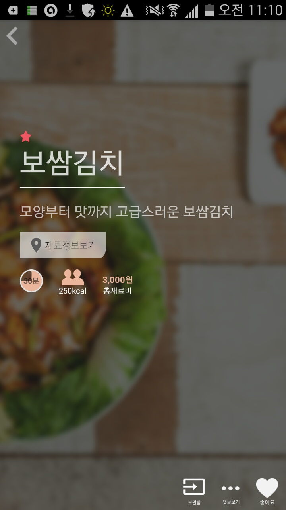
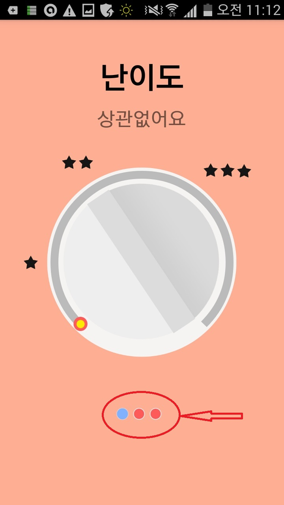
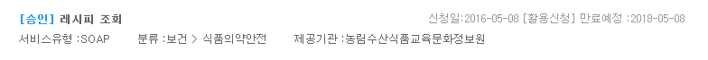
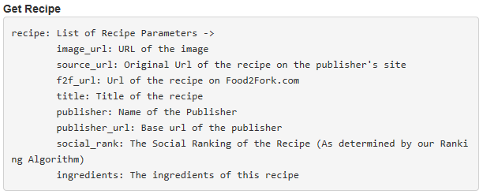
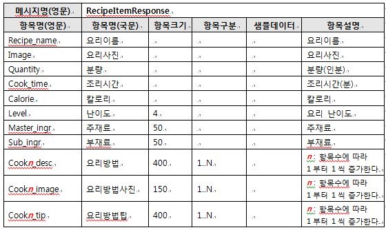
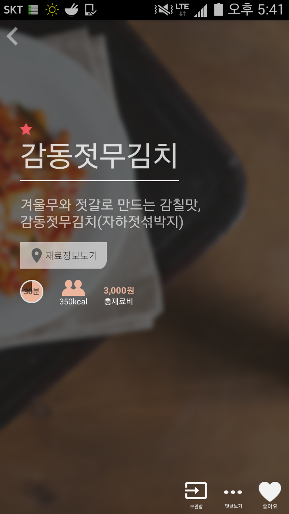
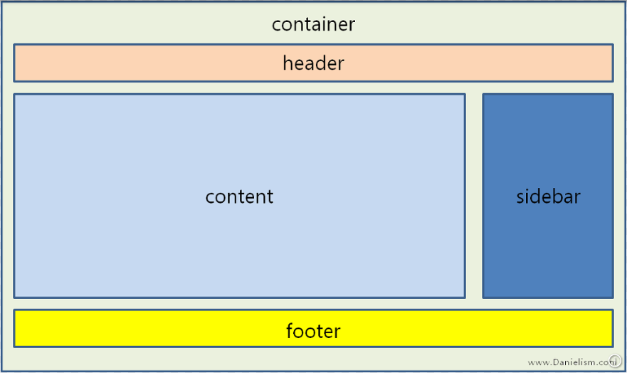

가장 먼저 사용자에게 보이는 것은 맛있는 음식들 사진입니다. 음식 사진을 선택했으나, 레시피가 바로 나오지 않아 찾는데에 시행착오를 겪게 됩니다.
우연하게 좌우로 드래그해보니 레시피를 발견합니다. 인터페이스 자체에 행위 유도성이 없고 설명도 없어 불친절합니다.
해결방법 : 좌우로 드래그를 시도해보도록 하게끔 그림으로 설명을 추가 OR 드래그 할 필요도 없이 한 화면에 레시피가 들어오도록 합니다.
 예) 좌측 화면엔 드래그에 대한 아무런 행동 유도가 없습니다. 우측 화면의 빨간 동그라미처럼, 좌우로 드래그를 시도해볼 수 있도록 하는 인터페이스가 필요합니다.
여전히 사용자 입장에선 음식들 사진이 주로 보이기에 아래쪽의 여러 음식들을 살펴봅니다.
하지만 이 음식들은 특정한 규칙을 갖고 사용자를 위해 정렬된 것이 아닌, 단순히 모든 음식 종류의 리스트일 뿐입니다.
가장 위의 검색과 필터사용이 가능한 빨간색 메뉴바는 작고 눈에 잘 들어오지 않습니다.
해결방법 : 메뉴의 크기를 키우거나 간단한 이미지를 삽입해 눈에 잘 띄게 합니다.
3분만에 핵심 기능에 도달하였으며 4분 30초만에 기본적인 모든 사용방법을 습득하였습니다.
첫번째 필터인 난이도 선택시 원의 형태로 드래그 시키는 방식의 인터페이스가 어머니껜 생소한듯 합니다. 여러번의 시행착오를 거칩니다
해결 방법 : 변화하는 수치가 아니라 단지 3단계로만 나뉘므로, 조금 더 직관적인 형태의 인터페이스로 바꿉니다
http://food2fork.com/about/api 사용할 API는 food2fork api 입니다.
food2fork api를 테스트 해보기 위해 위와 같이 javascript 코드를 짰으나,
이것저것 바꾸어보고 시도해도 저의 보고서 내부에서 데이터를 표시하기가 잘 안돼서 인터넷 창에 실행시켜 나온 데이터를 캡쳐해 보았습니다.
손그림으로 대강의 스토리보드를 구상, 이를 토대로 시각적 프로토타입을 제작합니다.
1)검색 기능 - 레시피이름, 레시피작성자, 재료 등으로 검색 가능. 가장 많이 사용되는 기능이므로 중앙에 크게 보여질 예정입니다.
2)추천 기능 - 특정 요리를 검색하러 들어온 사용자가 아닐 때 메뉴를 찾아볼 수 있습니다. 인기top10, 나라별, 재료별 레시피로 나뉩니다
3)최근 본 레시피 - 이 화면은 내가 봤던 레시피를 편하게 다시 볼 수 있도록 언제든지 오른쪽에 고정되어 있을 것입니다.
1)정렬 기능 - 정렬 기능을 이용해 사용자가 원하는 순서로 결과를 볼 수 있습니다.
2)필터 기능 - 스토리보드에는 나와있지 않지만 검색결과 중에서 다시 한번 검색 하는 기능입니다.
필터로 여과시키듯 원하는 결과를 뽑아낼 수 있게 할 것입니다.
1)요리 순서를 보여주는 화면입니다. 각 순서에 맞는 이미지를 보여줍니다
초기엔 활용할 API로 농림수산식품교육문화정보원에서 제공하는 공공데이터 '레시피 조회' 를 이용하려 하였습니다
그렇기에 상이한 공공데이터를 이용한 앱 '레시피디아'를 이용해 사용자 관찰 동영상을 촬영했습니다.
공공데이터에서 제공하는 레시피조회 api
하지만 공공데이터를 사용한 프로젝트가 이번이 처음이며 javascript와 jquery의 사용법도 아직 공부중이기 때문에
http://openapi.foodsafety.go.kr/webservice/soap/RecipeService?wsdl URL 을 이용해
데이터 쿼리를 가져오려 해도 번번히 실패하였습니다.
레시피조회 서비스 유형이 다른 API와는 달리 REST가 아닌 SOAP이며 URL 또한 End Point가 아닌 wdsl 로 되어있어
데이터를 가져오는 데에 조금 더 다른 방법이 필요한 것 같습니다. 아쉽게도 샘플코드를 제공해 주지 않아서
구글링을 통해 여러 해결법을 찾아보았지만 아직 성과를 내지 못했습니다.
차선책으로 다른 레시피 API를 찾아보던 도중 우리나라에는 레시피 관련 api가 거의 존재하지 않아서
외국의 api를 찾아보았고, 그 중 무료로 사용하기 편하다고 생각되며 설명도 친절하게 돼있는 food2fork api를 사용하기로 했습니다.
food2fork api의 응답 명세서
공공데이터 레시피검색api의 응답명세서
food2fork api와 공공데이터 api의 응답메시지 명세를 비교해보면
food2fork api에 비해 공공데이터의 api의 명세가 훨씬 다양한 것을 알 수 있습니다.
공공데이터 api를 이용하면 재료 뿐만 아니라 칼로리, 난이도, 조리시간은 물론 요리 방법 팁까지 자세한 데이터를 불러오므로
이를 토대로 사용자가 설정 할 수 있는 데이터가 food2fork의 api보다 훨씬 다양합니다.
그렇기에 아직 api 테스트가 완료되지는 않았지만 만약 성공한다면 최종 결과물에선 food2fork api보다 공공데이터의 api를
우선적으로 적용시켜 사용할 예정입니다. 만약 성공하게 된다면 난이도별, 칼로리별, 조리시간별 검색 기능도 추가할 예정입니다.
기존에 나와있는 앱 '레시피디아'를 이용해 실제 사용자인 50대 주부 어머니께 사용 테스트를 부탁해
인터페이스 관련해서 좋은 점과 부족한 점을 쉽게 알 수 있었습니다.
프로그램을 개발하며 컴퓨터에 익숙한 저의 입장에선 불편하게 느껴지지 않았던 사소한 것들이
다른 일반 사용자의 관점에선 큰 문제가 될 수 있다는 것을 관찰을 통해 알 수 있었습니다.
레시피는 오른쪽으로 드래그하면 나온다. 하지만 그러한 행위 유도가 없다.
종이에 대강의 스토리보드를 그린 후 이를 토대로 웹페이지 프로토타입을 제작하였습니다.
여기에 bootstrap css를 사용해 조금 더 깔끔한 인터페이스를 얻고 다루기 쉽도록 했습니다.
이전 과제인 보고서 제작시엔 이러한 것이 있는지를 몰랐었기 때문에 약간 아쉬웠습니다.
웹페이지 제작 시 가장 어려웠던 점은 내가 원하는 항목을 내가 원하는 곳에 위치시키기 힘든 점이었습니다.
항목의 위치와 크기등을 파워포인트나 그림판에서 작업하듯 하면 편하겠지만 그러한 드래그 방식을 이용할 수 없고
css 내부의 속성들을 이용해 이들을 모두 제어해야 했습니다.
원래 목표였던 구조
스토리보드의 사항을 그대로 구현해 내지 못한 점이 아쉬웠고 css내부의 속성들을 모두 알고 있지 않기 때문에
하나하나 검색에 의존해서 작성되어 코드의 일관성이 떨어진 점도 아쉽습니다.
조금 더 css의 구조 제어에 관해 기초부터 다시 복습 할 필요가 있습니다.
| # | 링크 | 내용 | 관련 |
|---|---|---|---|
| 1 | http://food2fork.com/about/api | food2fork api 매뉴얼 | 레시피 데이터 api 테스트 |
| 2 | http://getbootstrap.com/ | bootstrap 웹 ui 프레임워크 | 시각적 프로토타입 제작에 사용 |
| 3 | https://play.google.com/store/apps/details?id=seop.gyun.recipedia&hl=ko | 레시피디아 | 기존 앱 - 사용자 과업 분석에 사용 |
| 4 | https://opentutorials.org/course/1375/6851 | 생활코딩 opentutorials | jQuery ajax 관련 공부 |
| 5 | https://www.data.go.kr | 공공데이터포털 | 공공데이터 - 레시피 검색 api 테스트 |
작성자 : @@@ 점수 : @@@ 달콤한 케잌
음식1작성자 : @@@ 점수 : @@@ 달콤한 케잌
음식1작성자 : @@@ 점수 : @@@ 달콤한 케잌
작성자 : @@@ 점수 : @@@ 달콤한 케잌
음식1작성자 : @@@ 점수 : @@@ 달콤한 케잌
음식1작성자 : @@@ 점수 : @@@ 달콤한 케잌